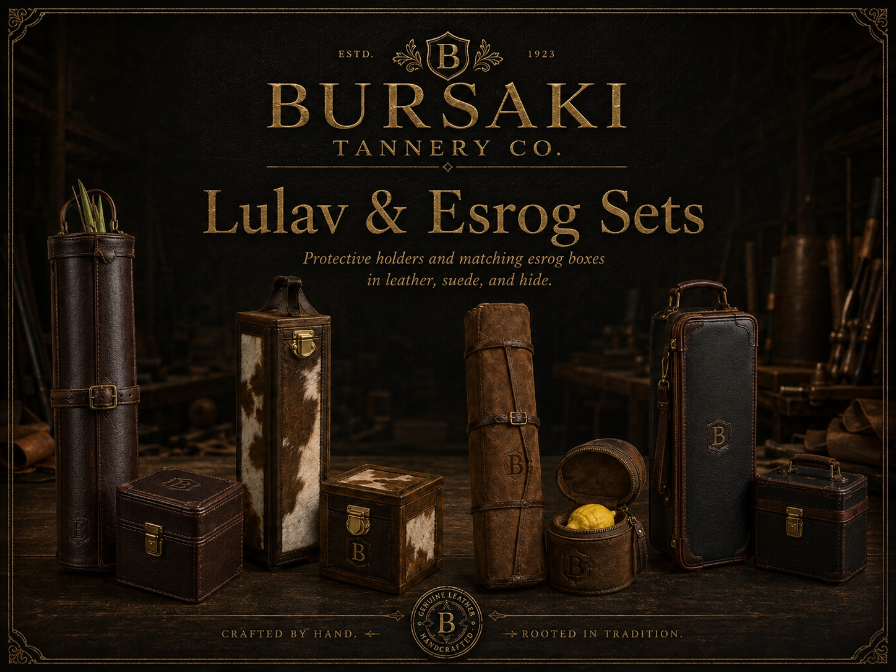

Leather • Suede • Hide
Distinctive Judaica. Exceptional materials. Built with purpose.
Explore the CollectionsDistinctive Judaica. Exceptional materials. Built with purpose.
Explore the CollectionsBrowse each category, then click any design to enlarge it and see the material, construction, and concept up close.

Flexible wrap-and-tuck designs in ultra-fine strands, suede, leather, braid, and round cord.
View collection →
Distinctive tallis ataras built around hide, mink-look texture, and refined leather materials.
View collection →
Respectful, masculine challah covers where natural hide pattern or embossed leather becomes the design.
View collection →
Protective lulav holders and matching esrog boxes in leather, suede, wood-and-hide, and travel-ready constructions.
View collection →Bursaki Tannery Co. reworks familiar Judaica through exceptional materials, thoughtful construction, and a stronger sense of design.
We use leather, suede, hide, and other tactile materials to create pieces that feel distinctive, substantial, and made for years of use.